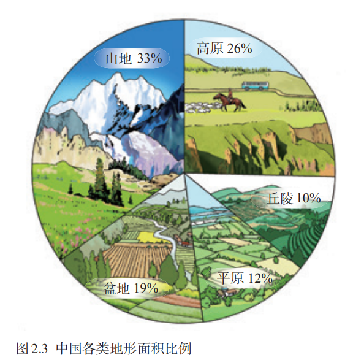
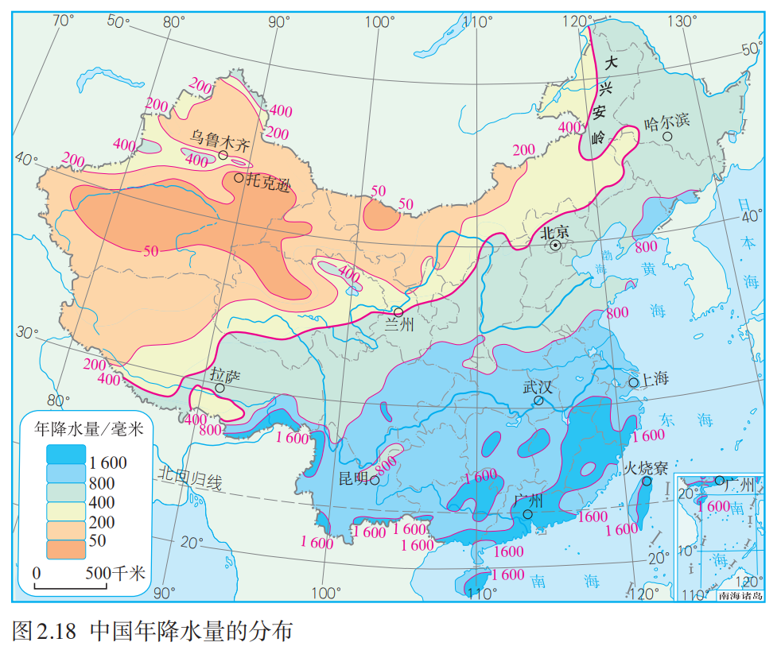
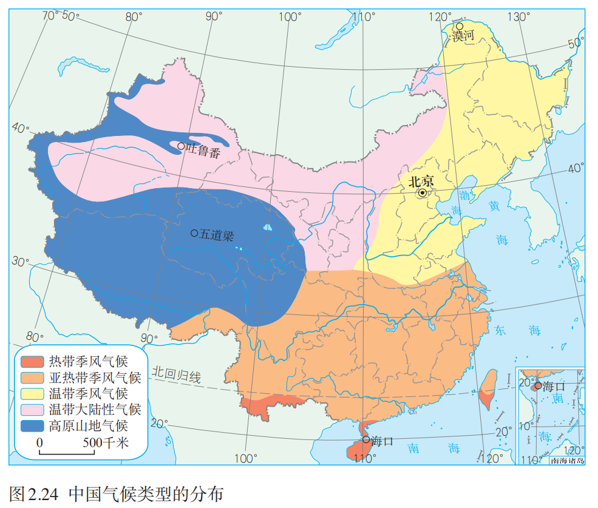
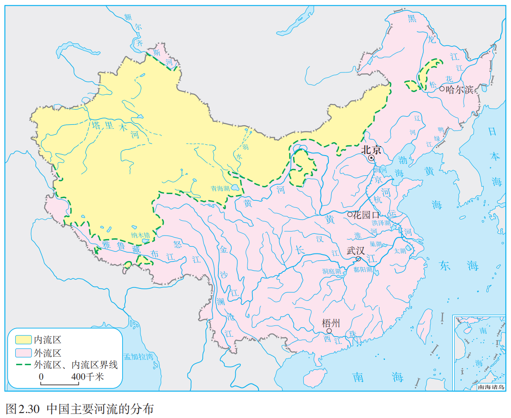
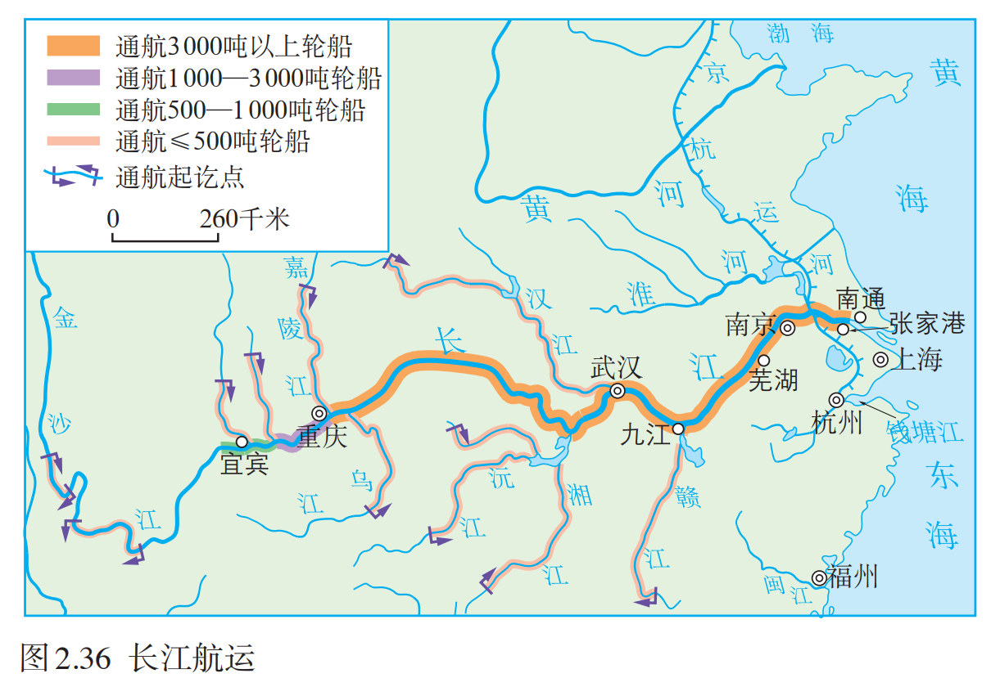
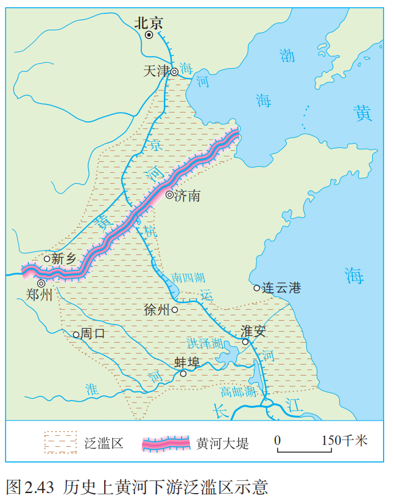
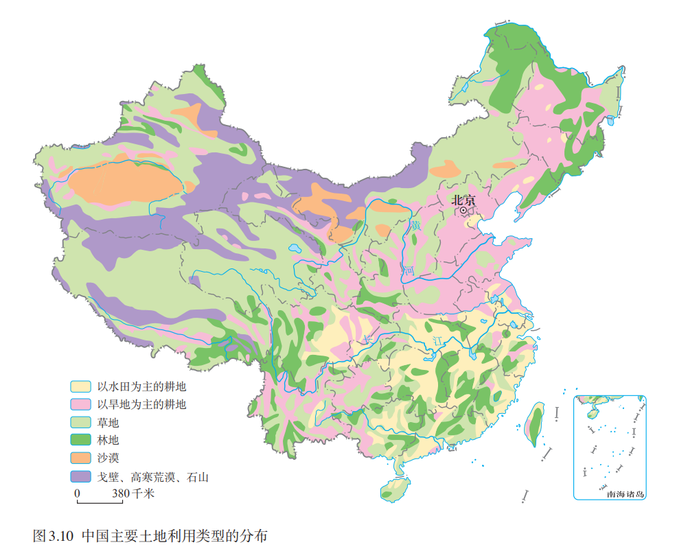
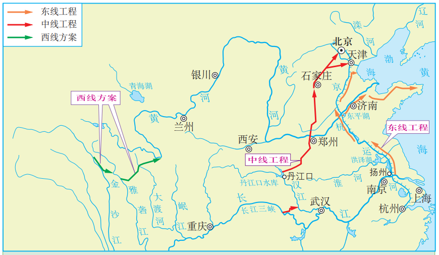
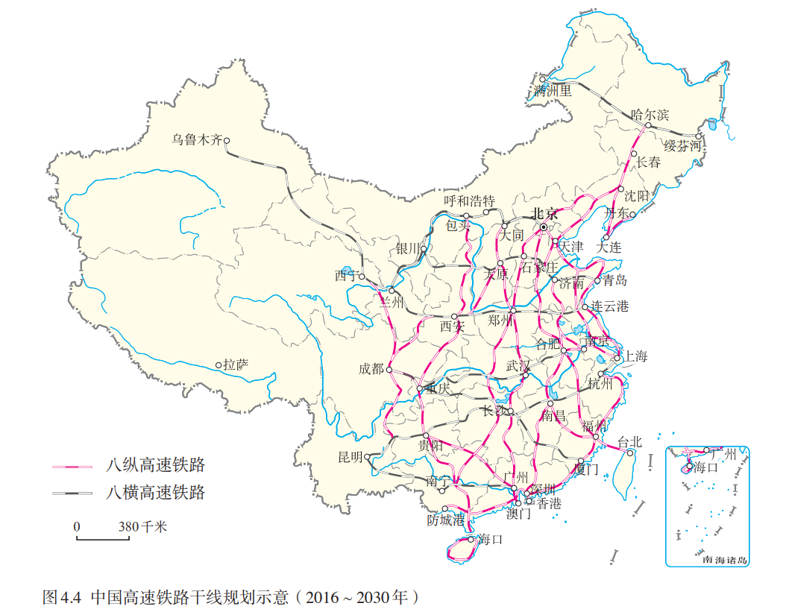
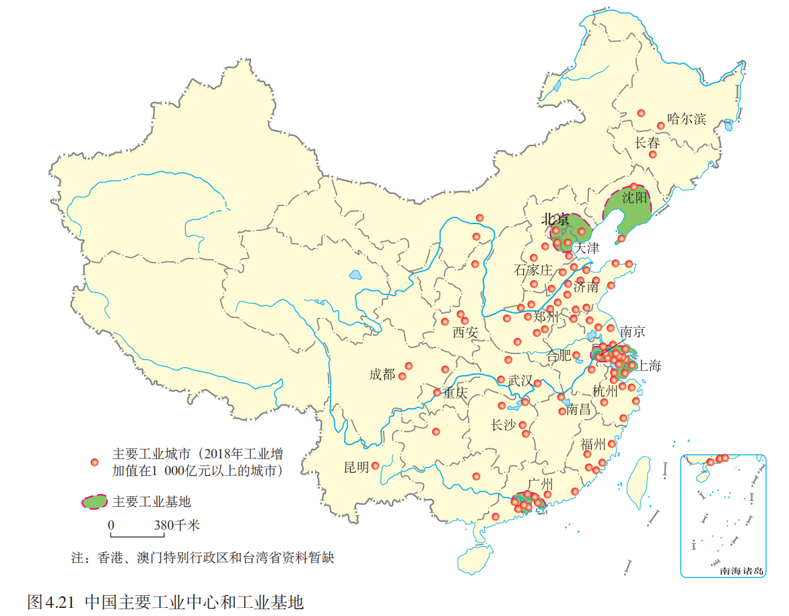

八上
第一章 从世界看中国
第1节 疆域
一、优越的地理位置
1. 描述中国的地理位置
半球位置：东半球、北半球
纬度位置：
海陆位置：亚欧大陆东部，太平洋西岸
2. 评价中国的地理位置
此处为大致逻辑
优势
纬度位置
海陆位置
交通
劣势（台风等）
二、海路兼备的大国
1. 领土
领陆：约
领海：领海基线向海上延伸
领空：领陆和领海上空
2. 领土四至点
最南端：海南省南沙群岛中的曾母暗沙
最北端：黑龙江省漠河市北端的黑龙江主航道中心线上
最西端：新疆维吾尔自治区的帕米尔高原上
最东端：黑龙江省黑龙江与乌苏里江主航道中心线的汇合处
3. 疆界与陆上邻国
陆上国境线：
陆上邻国：
4. 海洋
临海：渤海、黄海、东海、南海、太平洋
领海：领海基线向海上延伸
内海：渤海、琼州海峡
海峡：台湾海峡、琼州海峡
岛屿：台湾岛、海南岛、崇明岛、舟山群岛、南海诸岛、钓鱼岛
半岛：辽东半岛、山东半岛、雷州半岛
海岸线：大陆：
隔海相望的国家：
三、行政区划
1. 三级行政区划（一般情况）
省级：省、自治区、直辖市、特别行政区
县级：县、市、自治县
乡级：乡、镇、民族乡
补充：
2. 34个省级行政区划

| 名称 | 简称 | 行政中心 |
|---|---|---|
| 北京市 | 京 | 北京 |
| 天津市 | 津 | 天津 |
| 河北省 | 冀 | 石家庄 |
| 山西省 | 晋 | 太原 |
| 内蒙古自治区 | 内蒙古 | 呼和浩特 |
| 辽宁省 | 辽 | 沈阳 |
| 吉林省 | 吉 | 长春 |
| 黑龙江省 | 黑 | 哈尔滨 |
| 上海市 | 沪 | 上海 |
| 江苏省 | 苏 | 南京 |
| 浙江省 | 浙 | 杭州 |
| 安徽省 | 皖 | 合肥 |
| 福建省 | 闽 | 福州 |
| 江西省 | 赣 | 南昌 |
| 山东省 | 鲁 | 济南 |
| 河南省 | 豫 | 郑州 |
| 湖北省 | 鄂 | 武汉 |
| 湖南省 | 湘 | 长沙 |
| 广东省 | 粤 | 广州 |
| 广西壮族自治区 | 桂 | 南宁 |
| 海南省 | 琼 | 海口 |
| 重庆市 | 渝 | 重庆 |
| 四川省 | 川/蜀 | 成都 |
| 贵州省 | 贵/黔 | 贵阳 |
| 云南省 | 云/滇 | 昆明 |
| 西藏自治区 | 藏 | 拉萨 |
| 陕西省 | 陕/秦 | 西安 |
| 甘肃省 | 甘/陇 | 兰州 |
| 青海省 | 青 | 西宁 |
| 宁夏回族自治区 | 宁 | 银川 |
| 新疆维吾尔自治区 | 新 | 乌鲁木齐 |
| 香港特别行政区 | 港 | 香港 |
| 澳门特别行政区 | 澳 | 澳门 |
| 台湾省 | 台 | 台北 |
第2节 人口
一、世界上人口最多的国家
1. 人口总数
2. 人口增长趋势及其原因
人口增长速度指标：人口自然增长率
1949 年前，人口增长速度较慢
1949 年后，人口增长速度加快
原因：社会稳定、经济发展、医疗卫生条件改善
3. 人口特点
人口基数大，出生人口多
4. 人口多的影响
人既是生产者，又是消费者
利：提供充足的劳动力和消费市场
弊：需求量大，对资源、环境、社会经济的压力沉重
5. 计划生育
20 世纪 70 年代开始实施计划生育
目的：控制人口数量，提高人口素质
结果：人口自然增长率从
近年来，陆续实施二胎、三胎政策
目的：应对人口老龄化，促进人口与社会经济长期均衡发展
二、人口分布
1. 人口密度
2020 年，平均人口密度为
2. 分布特点
原因：
条件 西部 东部 地形 多高原、山地 多平原、丘陵 气候 温带大陆性气候、高原山地气候，降水稀少 温带、亚热带季风气候，雨热同期，降水较多 交通 交通路线少 交通路线密度大，海陆运输便利 经济发展 经济较落后 工农业发达 开发历史 晚 早
分布不均
人口地理界限：黑河（黑龙江省）— 腾冲（云南省）线，东密西疏
第3节 民族
一、中华民族大家庭
1. 民族概况
共
人口最多的民族：汉族（约占
人口最多的少数民族：壮族（超过
2. 民族文化
| 民族 | 乐器 | 重大节日活动或传统活动 |
|---|---|---|
| 朝鲜族 | 长鼓 | 跳板、长鼓舞 |
| 蒙古族 | 马头琴 | 那达慕大会（节） |
| 哈萨克族 | 冬不拉 | 古尔邦节、肉孜节 |
| 傣族 | 两面鼓 | 泼水节 |
| 壮族 | 合欢萧 | ”三月三“歌节 |
| 藏族 | 神鼓 | 雪顿节 |
| 苗族 | 芦笙 | 芦笙节 |
| 彝族 | 葫芦笙 | 火把节 |
| 回族 | 口弦 | 开斋节 |
二、民族分布
民族分布特点：大杂居、小聚居、交错居住
汉族分布特点：遍布全国各地
少数民族分布特点：主要分布在西南、西北、东北地区
第二章 中国的自然环境
第1节 地形和地势
一、地形：地形类型多样，山区面积广大
区分山地和山脉：
山地：海拔
米，坡度陡 山脉：山地呈条带状分布，沿一定方向延伸

1. 概况
地形类型多样：山地、高原、盆地、平原、丘陵
纵横交错的山脉，构成我国地形的”脊梁“
2. 主要山脉
看图记忆吧

3. 主要地形区及其特点
四大高原：内蒙古高原、黄土高原、青藏高原、云贵高原
内蒙古高原：地势平坦，一望无际
黄土高原：千沟万壑，支离破碎；水土流失严重
青藏高原：”远看是山，近看成川“（海拔高）；雪山连绵，冰川广布
云贵高原：地面崎岖，峰岭众多；喀斯特地貌发育
四大盆地：四川盆地、柴达木盆地、塔里木盆地、准噶尔盆地
四川盆地：西部四川平原农业发达
柴达木盆地：内部多戈壁、沙漠，东部多沼泽和盐湖；”聚宝盆“（矿产多）；地势最高
塔里木盆地：周围高山环绕，内部平坦，沙漠广布，边缘多绿洲；面积最大
准噶尔盆地：周围高山环绕，内部平坦，沙漠广布，边缘多绿洲；纬度最高
三大平原：东北平原、华北平原、长江中下游平原
东北平原：以黑土著称，面积最大
华北平原：面积第二大
长江中下游平原：”鱼米之乡“，面积第三大
三大丘陵：辽东丘陵、山东丘陵、东南丘陵
4. 山区面积广大

山区：山地 + 丘陵 + 崎岖的高原，约占全国
利：旅游、矿产、水能等资源丰富；森林、草场、耕地适合多种经营（发展林业、牧业、旅游业、采矿业等）
弊：耕地较少、交通不便、自然灾害容易发生、基础设施建设难度大（不利于耕作、交通）
二、地势：地势西高东低，呈阶梯状分布
1. 概况
地势：地表高低起伏的总趋势
我国地势西高东低，呈阶梯状分布
2. 三级地势阶梯

| 阶梯 | 海拔 | 主要地形 | 主要地形区 |
|---|---|---|---|
| 第一级阶梯 | 高原、盆地 | 青藏高原、柴达木盆地 | |
| 第二级阶梯 | 高原、盆地 | 准噶尔盆地、塔里木盆地、内蒙古高原、黄土高原、四川盆地、云贵高原 | |
| 第三级阶梯 | 平原、丘陵 | 东北平原、华北平原、长江中下游平原、东南丘陵、辽东丘陵、山东丘陵 |
分界线
第一、二级阶梯：昆仑山脉、祁连山脉、横断山脉
第二、三级阶梯：大兴安岭、太行山脉、巫山、雪峰山
3. 地势的影响
对气候（降水）：便于海上湿润气流深内陆，使我国东部地区形成丰沛的降水，适宜农业
对河流
流向：大多自西向东入海，水运沟通东西交通
流速：阶梯交界处落差大、流速快，水能丰富
第2节 气候
一、气温：冬季南北温差大，夏季普遍高温
1. 气温分布规律
冬季：南北温差大，由南向北气温递减
1 月
最冷：黑龙江漠河
夏季：南北普遍高温（除青藏高原等少数地区）
最热：新疆吐鲁番
2. 温度带的分布及其对农作物的影响

亚热带、暖温带分界线：秦岭—淮河一线
| 温度带 | 作物熟制 | 主要农作物或水果 |
|---|---|---|
| 寒温带 | 一年一熟 | 春小麦、大麦、马铃薯 |
| 中温带 | 一年一熟 | 春小麦、大豆、玉米、甜菜 |
| 暖温带 | 两年三熟/一年两熟 | 冬小麦、玉米、苹果、梨 |
| 亚热带 | 一年两熟/一年三熟 | 水稻、油菜、甘蔗、柑橘 |
| 热带 | 一年三熟 | 水稻、芒果、香蕉 |
| 青藏高原垂直温度带 | 一年一熟 |
二、降水：东西干湿差异显著
1. 降水的空间分布

降水量分布不均匀，自东南沿海向西北内陆递减（西北的部分地区降水较多，因为天山山脉抬升和拦截西风带水汽）
最多：台湾火烧寮；最少：新疆托克逊
原因：
2. 降水的时间分配
降水的时间分配不均匀，降水集中在夏季
南方雨季长，北方雨季短
降水量的年际变化大
3. 干湿地区

湿润区与半湿润区的分界线：秦岭—淮河一线
| 干湿区 | 干湿状况 | 主要植被 | 农牧业 |
|---|---|---|---|
| 湿润区 | 年降水量 | 森林 | 水田为主 |
| 半湿润区 | 年降水量 | 森林、草原 | 旱地为主 |
| 半干旱区 | 年降水量 | 草原 | 灌溉农业、畜牧业 |
| 干旱区 | 年降水量 | 荒漠 | 绿洲农业、牧业 |
三、我国气候的主要特征
1. 气候复杂多样的原因
2. 主要气候类型

| 气候类型 | 气候特点 |
|---|---|
| 热带季风气候 | 全年高温，分旱、雨两季 |
| 亚热带季风气候 | 夏季高温多雨，冬季温和少雨 |
| 温带季风气候 | 夏季高温多雨，冬季寒冷干燥 |
| 温带大陆性气候 | 夏热冬冷，降水较少，气温年较差大 |
| 高原山地气候 | 高寒，全年降水较少 |
3. 季风气候显著
我国东部地区为世界上典型的季风气候区
季风气候显著，雨热同期，利于农业生产
夏季风活动不稳定，易发生旱涝灾害
四、影响我国气候的主要因素
1. 纬度位置
自南向北，得到的太阳光热减少，气温降低
2. 海陆位置
| 季风类型 | 源地 | 风向 | 性质 | 影响 |
|---|---|---|---|---|
| 夏季风 | 太平洋、印度洋 | 东南、西南风 | 温暖湿润 | 大量降水，雨热同期 |
| 冬季风 | 蒙古、西伯利亚一带 | 西北、东北风 | 寒冷干燥 | 加剧北方的严寒，使得南北温差大 |
3. 地形因素
海拔
坡向
第3节 河流
一、概述：以外流河为主
1. 内流河与外流河
| 河流 | 定义 | 补给水源 | 主要分布区 |
|---|---|---|---|
| 内流河 | 最终未能流入海洋的河流 | 冰雪融水 | 西北内陆 |
| 外流河 | 最终流入海洋的河流 | 大气降水 | 东南部 |
2. 内流区与外流区

| 流域 | 定义 | 占全国总面积的比例 | 特点 |
|---|---|---|---|
| 内流区 | 内流河的流域 | 约 | 河流少，水量小（ |
| 外流区 | 外流河的流域 | 约 | 河流多，水量大（ |
3. 外流河的水文特征
共同特征
| 时期 | 时间 | 水文特征 | 成因 |
|---|---|---|---|
| 汛期 | 夏季风盛行时 | 水量大，水位上涨 | 受夏季风影响，雨带由南向北推移，东南部降水丰沛 |
| 枯水期 | 冬季风盛行时 | 水量小，水位下降 | 冬季风加强，雨带南撤，降水量小 |
不同特征
| 地区 | 流量 | 汛期 | 含沙量 | 结冰期 |
|---|---|---|---|---|
| 东北 | 丰富（流经湿润、半湿润区，蒸发量小） | 较长（春汛、夏汛） | 小 | 长 |
| 秦岭—淮河以北 | 较小（流经半湿润区、半干旱区） | 短（雨季短） | 大 | 短 |
| 秦岭—淮河以南 | 丰富（降水量大，流经湿润区） | 长（雨季长） | 小 | 无 |
特殊
植被覆盖率低及土质疏松的区域，河流含沙量大
春汛：东北地区的河流在春季出现涨水现象，原因为季节性积雪融水
凌汛：在秦岭—淮河一线以北地区，自较低纬向较高纬流的河流会出现凌汛现象
4. 内流河的水文特征
水量较小（河水主要来自高山冰雪融水和山地降水）
汛期短（夏季气温高，冰雪融水量大，山地降水较多，降水集中；部分河流冬季断流，属季节性河流）
5. 影响河流水文特征的主要因素
二、长江的治理与开发
1. 概况

基本信息
发源地：青藏高原上的唐古拉山脉的各拉丹冬峰
源头：沱沱河
注入海洋：东海
流向：自西向东
中国第一大河：流程最长、流域面积最广、水量最大
全长：
流域面积：
水量：年径流量
流经区域
流经地形区：青藏高原、横断山脉、云贵高原、四川盆地、巫山、长江中下游平原
干流流经省级行政区：青海、四川、西藏、云南、重庆、湖北、湖南、江西、安徽、江苏、上海
流经干湿地区：湿润区、半湿润区
主要支流、湖泊
主要支流：雅砻江、岷江（支流：大渡河）、嘉陵江、乌江、湘江、汉江、赣江
主要湖泊：洞庭湖、鄱阳湖、巢湖、太湖
各河段特点
| 河段 | 范围 | 流经区域 | 特点 |
|---|---|---|---|
| 上游 | 源头 | 山区 | 多峡谷，落差大，水流湍急，水能资源非常丰富 |
| 中游 | 宜昌 | 长江中下游平原 | 地势低平，河道弯曲，水面宽阔，流速缓慢 |
| 下游 | 湖口 | 长江中下游平原、长江三角洲 | 地势更低平，江面更宽阔，水网如织，水乡泽国 |
2. 长江的开发
“水能宝库”—水能丰富

原因：落差大，水流急
分布：水能资源主要集中在上游河段
总量：水能资源蕴藏量占全国的
“黄金水道”—航运价值高

自然条件
地势平坦，落差小，水流平稳
水量大，水位高，船舶吃水深
无结冰期，全年通航
干流贯通东西，支流分列南北，形成庞大的水运网
经济发展条件
干流航线和多条铁路及京杭运河相交，水陆联通
沿江地区人口多，经济发达，运量需求大
总量：干支流通航里程近
3. 长江的问题与治理
| 河段 | 问题 | 原因 | 治理 |
|---|---|---|---|
| 川江 | 滩多流急 | 三峡工程 | |
| 荆江 | 水流不畅 | 河道弯曲、河床高、地势低洼、降水集中 | 裁弯取直、建蓄洪区、加固堤防 |
| 上游 | 水土流失 | 水土保持，恢复植被 | |
| 中下游 | 洪涝灾害 | 降水丰富、支流众多；地势低洼，不易排水；河道弯曲；围湖造田 | 修建水库、裁弯取直、退田还湖 |
三、黄河的治理与开发
1. 概况

概况
发源地：青藏高原上的巴颜喀拉山脉
流向：自西向东
注入海洋：渤海
中国第二长河
长度：
流域面积：约
年径流量：
流经区域
流经地形区：青藏高原、内蒙古高原、黄土高原、华北平原
干流流经省级行政区：青海、四川、甘肃、宁夏、内蒙古、陕西、陕西、河南、山东
流经温度带：青藏高原垂直温度带、中温带、暖温带
流经干湿地区：干旱区、半干旱区、半湿润区
主要支流：洮河、湟水、汾河、渭河
各河段特点
| 河段 | 范围 | 流经区域 | 特点 |
|---|---|---|---|
| 上游 | 源头 | 地势第一、二级阶梯交界处 | 多峡谷，落差大，水能资源丰富 |
| 中游 | 河口 | 黄土高原 | 多泥沙 |
| 下游 | 桃花峪 | 华北平原 | 河床宽坦，水流缓慢，泥沙淤积，河床抬高 |
水文特征
冬季结冰
主汛期短，有凌汛
含沙量大
流量较小
2. 黄河的贡献
水能发电：主要上游
塑造平原：宁夏平原、河套平原、华北平原
提供灌溉水源：宁夏平原、河套平原
3. 黄河的忧患与治理
“地上河”（河床高出地面）


| 河段 | 问题 | 原因 | 治理 |
|---|---|---|---|
| 上游 | 荒漠化、凌汛 | 改善生态环境（合理放牧，恢复植被）；修建水库、水电站 | |
| 中游 | 水土流失严重 | 土层疏松、支流较多、降水集中；植被破坏严重 | 水土保持（造林种草、修建水利枢纽） |
| 下游 | “地上河”，黄河泛滥 | 落差变小，流速变缓 | 调水调沙、加固大堤、疏浚河道 |
凌汛
概念：河水结冰形成的冰坝阻塞河道，造成水位急剧上升的现象
条件：有结冰期，低纬度流向高纬度
出现河段：宁夏、内蒙古、山东境内的部分河段
解决措施：用破冰船破冰或用飞机、大炮炸开冰坝；水电站控制水量，减少凌峰形成，避免冰坝的产生
第4节 自然灾害
一、常见的自然灾害
1. 概念
自然环境发生异常变化，造成资源破坏、财产损失、人员伤亡等危害，叫做自然灾害
2. 分类
气象灾害
干旱：长时期降水异常偏少甚至无降水，造成农作物减产、人畜饮水困难等
洪涝：连续性的暴雨或短时间的大暴雨，可能形成洪涝
台风：一种发源于热带洋面的大气涡旋，常带来狂风和特大暴雨等，形成灾害
寒潮：强冷空气迅速入侵造成大范围的剧烈降温现象，并伴有大风、雨雪、冰冻等，形成灾害
地质灾害（山区发生频率较高）
地震：地球内部巨大能量释放导致地表震动，并产生地震波，形成灾害
滑坡：坡地上的不稳定块体在重力作用下整体向下滑动的现象，危害巨大
泥石流：在坡度较陡的沟谷中形成的饱含石块和泥土的特殊洪流，具有强大的破坏力
二、我国自然灾害频发
1. 我国自然灾害的特点
种类多
分布广
频率高
受灾重
2. 我国自然灾害的分布及其原因
| 自然灾害 | 主要分布区 | 原因 |
|---|---|---|
| 台风 | 东南沿海地区 | 临近热带海洋，登陆后逐渐减弱以至消失 |
| 洪涝 | 南方地区，尤其是河流中下游 | 降水量大且集中；地势低平，排水不畅 |
| 干旱 | 华北地区 | 气温回升快，蒸发量大；降水少，春旱严重；农业灌溉用水多，人口城市密集 |
| 寒潮 | 西北、华北、东北 | 临近冬季风的源地 |
| 滑坡、泥石流 | 西南地区 | 夏季降水集中多暴雨；多山、坡陡 |
| 地震 | 我国位于环太平洋地震带和地中海-喜马拉雅地震带上 |
三、防灾减灾
1. 国家：防灾减灾
防灾：预报灾害、防灾工程
减灾：救灾物资储备与人员调动
2. 个人：避灾
当地震发生时，如果条件允许，应及时、有序撤到安全的空旷地带；如果不能及时撤离，可以暂时躲在小开间的墙角
当发生泥石流时，应向垂直于泥石流流动方向的山坡上跑
第三章 中国的自然资源
第1节 自然资源的基本特征
一、自然资源的概念及分类
1. 自然资源的概念
自然界中天然存在、未经人类加工，对人类活动有价值的物质或能量
2. 自然资源的分类
可再生资源：可以更新、再生或可以循环利用
非可再生资源：形成、再生过程缓慢
3. 合理利用河保护自然资源
可再生资源：合理利用、注意保护和培育
非可再生资源：珍惜和节约、开发替代性的新能源
二、我国自然资源的情况
1. 我国自然资源的特点
总量丰富，人均不足
种类齐全
2. 我国自然资源利用现状
人均占有量继续减少
破坏与浪费严重
需求持续增长
第2节 土地资源
一、土地资源的分类
农业用地
耕地：种植业
林地：林业
草地：畜牧业
建设用地
城乡建设用地
交通用地
工矿用地
通常情况下难以利用的土地：永久积雪、冰川、戈壁、沙漠、石山、高寒荒漠等
二、我国土地资源的特点

1. 数量特点
总量丰富，人均不足
2. 构成特点
土地类型齐全
耕地少，难以利用的土地较多，后备耕地不足
3. 分布特点
土地资源地区分布不均
三、土地资源的分布

| 土地利用类型 | 主要干湿地区 | 主要地形类型 |
|---|---|---|
| 耕地-水田 | 湿润区 | 平原、丘陵 |
| 耕地-旱地 | 半湿润区 | 平原、高原、丘陵 |
| 草地 | 半干旱区 | 高原、山地 |
| 林地 | 湿润区 | 山地、丘陵 |
| 难以利用土地 | 干旱区 | 高原、山地、丘陵 |
四、合理利用每一寸土地
1. 我国土地资源利用面临的问题
水土流失
土地荒漠化
乱占耕地
土地污染
2. 基本国策
“十分珍惜、合理利用土地和切实保护耕地”
3. 保护措施
制定法律、法规
建设人工草场，保护天然草场
营造防护林，治理沙化、盐碱化
第3节 水资源
一、水资源概况
1. 水资源
通常把地球上的淡水资源称为水资源
主要淡水资源：河流水、淡水湖泊水
2. 衡量水资源的指标
河流径流量（水量）
二、水资源的时空分布
1. 空间分布特点
南丰北缺，东多西少
2. 时间分布特点
夏秋多，冬春少
年际变化大
3. 对社会经济发展的影响
南北方农业土地利用方式差异明显
水旱灾害频繁，农业生产不稳定
西北干旱地区，水资源不足制约社会经济发展
华北地区严重缺水的原因
自然原因
降水较少且季节分配不均，年际变化大
水资源与土地资源配置不合理
经济发展原因
城市和人口密集，工农业较发达，蓄水量大
水资源污染和浪费现象严重
三、合理利用与保护水资源
1. 解决我国水资源时空分布不均问题的措施
| 问题 | 解决措施 | 例子 |
|---|---|---|
| 水资源季节变化大 | 兴建水库 | 三峡工程、小浪底水利枢纽 |
| 水资源地区分布不均 | 跨流域调水 | 南水北调、引滦入津、引黄入晋等 |
南水北调

东线工程：从长江下游扬州江都抽引长江水，主要利用京杭运河输送，北达山东与天津
中线工程：目前从丹江口水库引水，沿线开挖渠道，自流北上，北达北京
西线方案：把长江上游的水引入黄河，补充西北地区的水资源
2. 节约用水、保护水资源的具体措施
| 场景 | 节约用水措施 | 减少污染措施 |
|---|---|---|
| 农业生产 | 改变灌溉方式：漫灌 改变作物品种：耐旱、耗水少的作物 | 减少农药、化肥使用 使用低残留农药 |
| 工业生产 | 工业用水重复、循环利用 降低生产耗水，提高利用效率 | 达标排污 污水处理 |
| 日常生活 | 一水多用 推广节水器具 | 少使用洗涤剂和清洁剂 |
第四章 中国的经济发展
第1节 交通运输
一、交通运输方式的选择
1. 交通运输
把人或物从一个地方运输到另一个地方
“经济发展的先行官”
2. 交通运输方式的选择
| 运输方式 | 运输工具 | 运量 | 运费 | 运速 | 其它 | 适合运输的货物 |
|---|---|---|---|---|---|---|
| 铁路运输 | 火车 | 较大 | 较低 | 较快 | 造价高，建设周期长 | 大宗、笨重货物，长途运输 |
| 公路运输 | 汽车 | 小 | 较高 | 较慢 | 机动灵活，装卸方便 | 短途运输、量小的货物 （鲜活的或容易变质的货物，运距较近） |
| 水路运输 | 船舶 | 最大 | 最低 | 最慢 | 灵活性差 | 大宗、远途、时间要求不高的货物 |
| 航空运输 | 飞机 | 小 | 最高 | 最快 | 急需、贵重、数量少、质量小的货物 | |
| 管道运输 | 管道 | 大 | 受自然因素影响小；投资大，灵活性差 | 石油、天然气等液体、气体货物 |
二、我国铁路干线的分布
1. 影响铁路建设的因素
自然条件：地形地势、海陆分布等
社会经济条件：人口、技术、资金等
2. 分布特点
| 地区 | 铁路建设时间 | 发展速度 | 铁路网 |
|---|---|---|---|
| 东部 | 较早 | 较快 | 密集 |
| 西部 | 较晚 | 较慢 | 稀疏 |
3. 八纵八横高速铁路网

4. 主要铁路干线

第2节 农业
一、农业及其重要性
1. 主要农业部门
种植业：在耕地上种植农作物
林业：种植、养育、保护、采伐林木及对林产品进行采集和加工
渔业：在水域中进行天然捕捞，或者人工养殖有价值的水生生物
畜牧业：靠放牧或饲养牲畜及家禽等而获得产品
2. 农业的重要性
农业是我国国民经济的基础，支撑国民经济建设与发展
二、我国农业的地区分布
1. 西部与东部的差异

分界线：
西部：畜牧业、种植业
畜牧业：四大牧区（新疆牧区、内蒙古牧区、青海牧区、西藏牧区）
种植业：有灌溉水源的平原、河谷、绿洲发展灌溉农业、河谷农业、绿洲农业
东部：种植业、林业、渔业
种植业：湿润、半湿润的平原地区
林业：东北林区（天然林）、西南林区（天然林）、东南林区（人工林）
渔业：沿海地区（海洋渔业基地）、南方地区（淡水渔业发达）
2. 东部地区北方与南方农业生产的差异
分界线：
| 地区 | 耕地类型 | 农作物熟制 | 粮食作物 | 油料作物 | 糖料作物 | 纤维作物 |
|---|---|---|---|---|---|---|
| 北方 | 旱田 | 一年一熟/两年三熟/一年两熟 | 小麦、玉米 | 大豆、花生 | 甜菜 | 棉花 |
| 南方 | 水田 | 一年两熟/一年三熟 | 水稻 | 油菜 | 甘蔗 | 棉花 |
三大棉区：新疆、华北平原、长江中下游平原
三、因地制宜发展农业
1. 影响农业生产的因素
自然条件：光照、热量、水分、地形、土壤
社会经济条件：交通、市场、科技、政策、劳动力
2. 因地制宜发展农业
”宜粮则粮“：地形平坦，土壤肥沃， 水源丰富，利于耕作的地区可以发展粮食生产
”宜林则林“：地形陡峭，水土容易流失的地区可以发展林业，保持水土
”宜牧则牧“：降水较少，但牧草生长良好的地区适宜发展畜牧业
”宜渔则渔“：河湖较多的地区适宜发展渔业
市郊：种植蔬菜、花卉，发展肉、乳、禽、蛋生产
四、走科技强农之路
良种化
机械化、专业化
水利建设
绿色农业
第3节 工业
一、矿产资源
1. 分类
2. 特点
总量丰富、种类齐全、人均不足
分布广泛，相对集中
贫矿多，富矿少，伴生矿多
二、工业及其重要性
1. 概念
开采资源资源、对原材料进行加工和再加工
2. 分类
轻工业：以提供生活资料为主的工业，产品
重工业：以提供生产资料为主的产业，产品
3. 重要性
现代工业为社会经济各部门提供先进的工具和设备、原材料和动力等生产必需的物质条件
三、我国工业的分布
1. 我国工业分布的基本格局

东部沿海地区工业中心密集，集中了主要的工业基地
中部地区工业中心较多
西部地区工业中心较少，分布稀疏
2. 四大工业基地
顺序自北向南
| 工业基地 | 性质和地位 | 发展条件 |
|---|---|---|
| 辽中南 | 全国最大的重工业基地 | 丰富的矿产资源 便利的交通 |
| 京津唐 | 北方最大的综合性工业基地 | 丰富的矿产资源 科技力量雄厚 交通便利 靠近山西能源基地 |
| 长江三角洲 | 全国最大的综合性工业基地 | 历史悠久，工业基础雄厚 科技力量雄厚 消费市场广阔 水陆交通运输广阔 |
| 珠江三角洲 | 以轻工业为主的综合性工业基地 | 靠近香港、澳门 紧邻东南亚，多侨乡，可利用外资发展工业 |
四、蓬勃发展的高新技术产业
1. 高新技术产业的内容
电子信息、生物技术、新材料、新能源等
2. 我国高新技术产业分布
国家级高新技术产业开发区多依附于大中城市
聚集地区：环渤海地区、长江三角洲、珠江三角洲
3. 影响高新技术产业发展的主要因素
科技、人才
五、影响工业发展的因素
自然因素：地形、矿产资源、水资源
社会经济因素：市场、交通、劳动力、政策、科技
（补充）海洋资源
八下
第五章 中国的地理差异
一、地理差异显著
1. 自然环境差异的表现及原因
气温：自南向北逐渐降低
降水：自东南沿海向西北内陆逐渐减少
地势：西高东低。呈三级阶梯状分布
2. 人文环境差异
农业：东耕（种植业）西牧（畜牧业）、南稻北麦
人口、城市、交通网：西密东疏
经济发展水平：东高西低
二、四大地理区域
1. 地理区域的名称
北方地区、南方地区、西北地区、青藏地区
2. 地理区域的分界线
南方地区、北方地区：秦岭—淮河一线
暖温带、亚热带分界线
半湿润区、湿润区分界线
西北地区、北方地区：
青藏地区边界：地势第一、二级阶梯分界线
3. 如何研究各区的自然环境
地理位置（相对位置）
地形、地势
气候
河流（、湖泊）
植被、土壤
（不知道放哪里好）
北方地区：落叶阔叶林、针叶林（为主）
南方地区：常绿阔叶林
第六章 北方地区
第1节 自然特征与农业
一、自然概况
1. 位置和范围
大兴安岭以东
内蒙古高原以南
青藏高原以东
秦岭—淮河以北
东临渤海、黄海
2. 地形、地势：西高东低，以高原、平原为主
东部：面积辽阔的东北平原、华北平原
西部：沟壑纵横的黄土高原
3. 气候
气候类型：大部分地区属于温带季风气候
气温：最冷月
年平均降水量：大部分地区为
温度带：大部分地区属于中温带和暖温带
干湿区：大部分地区属于半湿润区
4. 河流
华北地区：有结冰期，含沙量大，年径流量较小，流量的季节变化大，夏季降水多，有夏汛，汛期较短
东北地区：结冰期长，含沙量较小，有春（季节性积雪融水）、夏两个汛期
5. 土壤
东北平原：黑土
土壤肥沃，利于农作物生产
限制因素：热量不足
黄土高原、华北平原：黄土
肥力较黑土地差
限制因素：水资源短缺
二、重要的旱作农业区
1. 发展农业的自然条件
有利：
地形：平坦开阔，耕地集中连片
气候：与热同期
土壤：肥沃
不利：
年降水量较少
2. 农作物熟制
| 地形区 | 温度带 | 耕作制度 |
|---|---|---|
| 东北平原 | 中温带 | 一年一熟 |
| 黄土高原 | 暖温带 | 两年三熟/一年两熟 |
| 华北平原 | 暖温带 | 两年三熟/一年两熟 |
3. 主要农作物
粮食作物：小麦、玉米、谷子（小米）
经济作物：甜菜、棉花、大豆、花生
4. 自然灾害——春旱
范围：华北平原、黄土高原
原因
自然原因：春季气温回升快，蒸发量大，降水较少；河流径流量消
人为原因：工农业用水过度；水资源污染严重；水资源浪费严重
春季小麦返青，农业需水量大
解决措施
开源：跨流域调水、兴修水利
节流：培育抗旱、耐旱农作物；发展节水农业
第2节 “白山黑水”——东北三省
一、自然概况：山环水绕、沃野千里
1. 位置和范围
包括黑龙江、吉林、辽宁
位于中国东北部
2. 地形：以山地、平原为主
小 tip：河流流向
地势起伏
东部：长白山地
北部：小兴安岭
西倚：大兴安岭
山地之间：东北平原
三江平原、松嫩平原、辽河平原
3. 河流
鸭绿江、图们江
长白山地东南方
中朝界河
黑龙江
大、小兴安岭北方
中俄界河
4. 气候：冷湿
纬度较高，紧邻冬季风源地
气温较低
二、农业
1. 我国最大的商品粮生产基地
发展条件（有利）
土壤肥沃，适宜农作物生长
地形平坦，土地集中连片，适于大规模机械化耕作
气候雨热同期，有利于农作物的生长
地广人稀，本地粮食消费少
农业科学技术水平高
发展条件（不利）
纬度较高，气温只能满足农作物一年一熟的需要
春秋季节，经常受冬季风影响，容易发生寒潮
结果
是我国机械化程度最高，提供商品粮最多的粮食生产基地
2. 主要农作物
水稻、小麦、玉米、大豆等
3. 湿地问题
湿地：泛指暂时或长期覆盖水深不超过
湿地的分布：三江平原分布着亚洲最大的淡水湿地
湿地的作用：涵养水源、蓄洪防旱、调节气候、维持生态多样性
东北面临的问题：大面积开荒（”北大荒“
解决措施：停止开荒，建立一批自然保护区
三江自然保护区的主要保护对象是沼泽湿地
三、工业：我国最大的重工业基地
1. 矿产资源
种类多、储量大
2. 发展
中国成立后建立的第一个重工业基地，”新中国工业的摇篮“
依托丰富的资源，迅速发展为中国最大的重工业基地
3. 分布
矿产资源产地附近及交通沿线附近
4. 问题：经济发展滞后
时间：
原因：资源枯竭、设备老化、产业结构单一等
解决措施：国家明确提出振兴东北老工业地区，东北三省制定详细的发展规划
现状：东北三省的经济发展势头良好，前景广阔
第3节 黄土高原——世界最大的黄土堆积区
一、自然概况
1. 位置
东起太行山脉
西至乌鞘岭
北连内蒙古高原（大致以长城为界）
南抵秦岭
2. 范围
陕西、山西、甘肃、宁夏、河南、青海、内蒙古的部分地区
3. 地势
海拔在
西北高，东南低
4. 气候：过渡性明显
大部分地区属温带季风气候和温带大陆性气候
半湿润区向半干旱区过渡的地区
二、文明摇篮
1. 黄土风情
传统民居：窑洞
陕北民歌：信天游
民间鼓舞：腰鼓
白头肚头巾
2. 原因
有黄河流经
黄土疏松肥沃，便于耕种
黄土高原曾经林草茂盛，环境宜人
三、黄土高原的形成及地貌特征
1. 风吹来的高原——风成说
2. 黄土地貌：地表破碎，千沟万壑
原因
黄土土质疏松，极易遭受流水的侵蚀
流水侵蚀使得黄土高原地表破碎，沟壑纵横，形成多种地貌景观
地貌景观
黄土塬：残留的高原面，顶部平开阔，四周被流水侵蚀形成沟壑
黄土墚：塬面受流水侵蚀，沟谷发育，分割成长条状的山脉
黄土峁：墚进一步被沟谷切割分离，形成孤立的馒头状山丘
川：沟谷进一步发育形成，农业较发达、人口集中
四、严重的水土流失
1. 危害
肥沃土壤流失
河流含沙量增加
2.